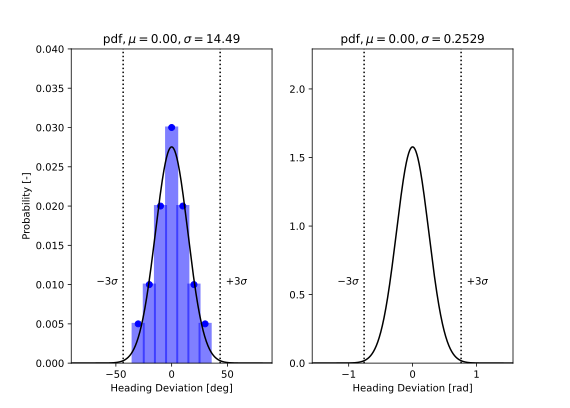
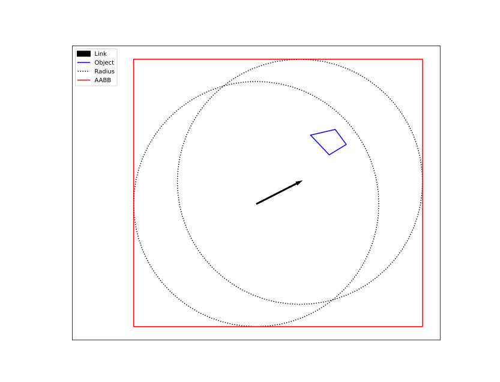
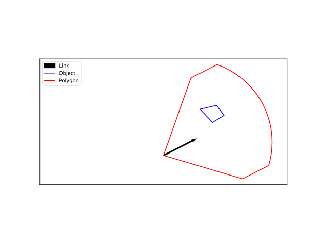
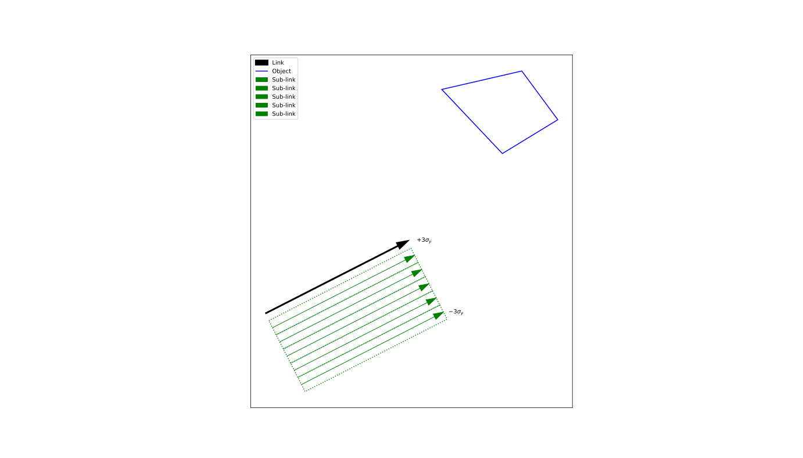
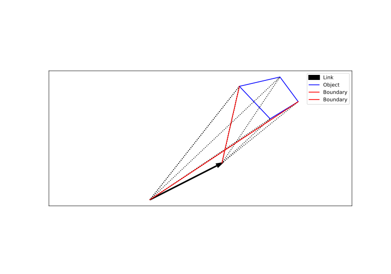
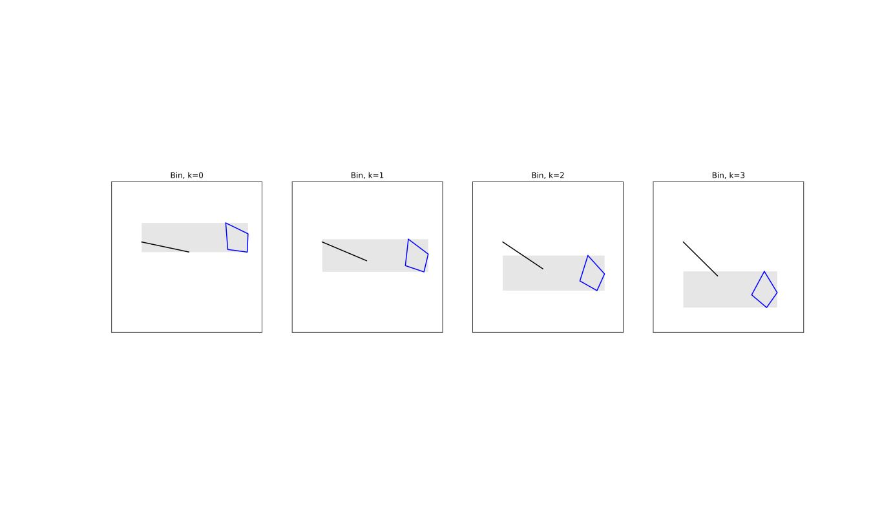

Warning
Under Development
Ship-Object Exposures#
A ship may collide with a static object located within an area. Such collisions can result from either drifting or ramming, both of which are explained in the following sections. The potential for a ship-object exposure is quantified as ‘danger miles’—the portion of a link or cell where a collision will occur if the vessel exits the traffic lane and no preventive measures are taken.
A drift collision occurs as a result of an uncontrollable event, such as an engine failure, which causes the ship to lose propulsion and begin drifting. This failure can happen at any location at sea. Once the disturbance occurs, the vessel becomes disabled and starts drifting in a specific direction at a speed determined by environmental conditions such as wind, waves, and currents. A drifting vessel may pose a threat to static objects at sea. If the ship drifts toward such an object and no effective countermeasures are taken in time, a collision may occur. Although the drift speed is typically low, the impact can still cause significant damage to both the object and the vessel due to the ship’s mass and momentum.
A ram collision, on the other hand, is typically the result of navigational or human error. For example, the navigator may have temporarily left the bridge and, upon returning, discovers that the vessel is on a collision course with a stationary object. In such cases, emergency maneuvers—such as a hard turn or setting the engine to “Full Astern”—may be attempted to avoid impact. Contributing factors to such errors include medical emergencies (e.g., heart attacks), intoxication, fatigue, or sleep deprivation. In rare cases, more severe causes such as gross negligence or intentional actions (e.g., suicidal behavior) may be involved.
Nomenclature#
Symbol |
Meaning |
|---|---|
\(\mu_{\theta}\) |
Mean value of ram heading distribution |
\(\mu_{y}\) |
Mean value of lateral distribution for a link-ship pair |
\(\sigma_{\theta}\) |
Standard deviation of ram heading distribution |
\(\sigma_{y}\) |
Standard deviation of lateral distribution for a link-ship pair |
\(\theta_{drift}\) |
The ship’s drift heading |
\(\theta_{wind}\) |
Wind heading |
\(\theta_{j,min}\) |
Lower boundary of the ram exposure heading for object \(j\) |
\(\theta_{j,max}\) |
Upper boundary of the ram exposure heading for object \(j\) |
\(\boldsymbol{e}_{\textrm{current}}\) |
2D unit vector of the current velocity in the area |
\(\boldsymbol{e}_{\textrm{drift}}\) |
2D unit vector of the ship’s (drift) velocity |
\(\boldsymbol{e}_{\textrm{wind}}\) |
2D unit vector of the wind velocity in the area |
\(v_{\textrm{current}}\) |
Current speed in the area |
\(v_{\textrm{drift}}\) |
Drift speed of the ship |
\(v_{\textrm{drag}}\) |
Wind speed in the area |
\(N_{ram}\) |
Ram exposure frequency |
\(P_{i}\) |
Lateral probability for sub-link \(i\) |
\(P_{k}\) |
Heading probability for bin \(k\) |
\(Q\) |
Passing ships on a link per type and time unit |
\(S_{k}\) |
Projected length on the sub-link of bin \(k\) |
General#
The ship is geometrically represented by a rectangular block. This ship has the following attributes: width, length, draft, height and speed.
An object is represented by a polygon in the horizontal plane. The polygon has the following attributes: type, elevation and shielding (true/false).
RAM Exposure Model#
The heading distibution for a ram event is given by a table. In total seven (7) headings are considered.
Course deviation compared to link heading [deg] |
Probability [-] |
|---|---|
-30 |
0.05 |
-20 |
0.10 |
-10 |
0.20 |
0 |
0.30 |
10 |
0.20 |
20 |
0.10 |
30 |
0.05 |
For practical reasons this table has been converted into a continuous probability density function. This normal distribution fit is depicted in Fig. 28.

Fig. 28 Normal distribution fit from tabular ram heading data#
Drift Exposure Model#
The drift velocity of a ship is decomposed into three distinct components:
Here \(\boldsymbol{e}\) represent a unit direction vector, \(|\boldsymbol{e}| = 1\). The tide is only taken in the direction of the drift velocity. This can be rewritten as
Divide by \(v_{\textrm{drag}}\) Renaming the first part to \(v_e\) yields
with \(R = \frac{v_{\textrm{current}}}{v_{\textrm{drag}}}\). Given a drift angle, windscale \(S\) and a current \(C\), the values for the current and drag velocties can be computed as well as the current direction. It is assumed that in most cases the tide is not a dominant contributor and on average is zero. This leaves the equation with two unknowns, \(v_{\textrm{e}}\) and the angle of the wind \(\theta_{\textrm{wind}}\). In theory this system can be solved, however it is possible that there is no solution. This is the case when the drag velocity can not overcome the current velocity in the orthogonal drift direction. This implies that the ship can never drift into the direction of the chosen drift angle and the probability of drifting in that directin is zero.
Finding the wind angle#
To compute this system of equations first multiply Eq. (44) with \(\boldsymbol{e}_{\textrm{drift}}\) and noting that the dot product between the same unit vectors is one, leading to
with \(a_0 = \boldsymbol{e}_{\textrm{current}} \cdot \boldsymbol{e}_{\textrm{drift}}\) and \(a_1 = \boldsymbol{e}_{\textrm{wind}} \cdot \boldsymbol{e}_{\textrm{drift}}\). This can be repeated by multiplying Eq. (44) with \(\boldsymbol{e}_{\textrm{current}}\) and \(\boldsymbol{e}_{\textrm{wind}}\) leading to the equations
where \(a_2 = \boldsymbol{e}_{\textrm{current}} \cdot \boldsymbol{e}_{\textrm{wind}}\).
Next \(v_e\) can be eliminated be substituting Eq. (45) into Eq. (46) and Eq. (47),
and,
Note that Eq. (48) can eliminate \(a_2\) from Eq. (49) in a straightforward manner,
The variable \(a_1\) is now expressed in known quantities and the system is solved. The wind direction vector can now be computed by combining Eq. (50), Eq. (45) and Eq. (44). Taking the atan2 of this vector will yield the angle.
It is possible that \(a_1^2\) becomes negative. In these cases there exist no solution. Those are cases where \(v_{\textrm{current}}\) and \(v_{\textrm{drag}}\) can not compensate the velocity components in the orthogonal direction of \(\boldsymbol{e}_{\textrm{drift}}\). The limitig value of the ratio of these velocities can be estimated by setting \(a_1\) to zero in Eq. (50),
Note that \(a_0 \in [-1,1]\) and so \(R_{\mathrm{lim}} \in [1,\infty]\). When \(R < 1\) the solution is always stable. In cases where \(R > R_{\mathrm{lim}}\) there will be no net velocity in the direction of the drift angle possible and hence any given winddirection will give no collision. These drift angles can be neglected. Observe that this equation can also be reverted, solving for the admissible \(a_0\) values given the current and drag velocities.
An alternative way to compute the angle, without resorting to vectors is:
It can be proven that there is only one solution when \(R < 1\), which is that \(a_1\) must be positive. Take Eq. (44) and consider these possible solutions for postive \(v_e\).
Now observe that \(\sqrt{R^2 + a_0^2 - R^2 + 1} \geq \sqrt{R^2 a_0^2 }\) when \(- R^2 + 1 > 0\). In that case the negative case is invalid and hence for \(R \leq 1\) only the positive solution is valid. Now consider the case where \(R > 1\), then \(\sqrt{R^2 + a_0^2 - R^2 + 1} \leq \sqrt{R^2 a_0^2 }\) implying that both solutions are always valid.
Tide velocity#
The tide is modeled by a set of frequencies which is obtained from tidal measurements. The most dominating frequenties generate a beating pattern with frequency of \(\frac{f_2 - f_1}{2}\) which has a period generally in the range of a month. At \(N_{\mathrm{steps}}\) along this frequency, local simulations are performed in which the velocity is integrated numerically for 24 hours with a time-step of 1 hour. If the distance never exceeds the distance to the target object then there will be no collision.
The route bound and the non-route bound procedures are discussed in the next two sections.
Route Bound#
To calculate exposure frequencies for route-bound traffic, the following steps are performed:
Axis-Aligned Bounding Box (AABB) Filter Filters geometry using axis-aligned boundaries to simplify spatial analysis.
Polygon Filter Refines geometry filtering by considering link orientation and ram course.
Lateral Bins Analyzes and prepares the lateral sub-links for further spatial operations.
Boundaries Analyzes and prepares the heading range for further spatial operations.
Exposures no Shielding Calculates the exposure frequency based on the processed spatial data for each seperate object.
Projections Creates bins based on the calculated boundaries and performs projections that serve as input for exposure analysis.
Elevation Filter Identifies and excludes object/ship type combinations that cannot result in exposure due to elevation constraints.
Exposures Computes the exposure frequencies for unique link/object/ship type combinations.
Exposures with Shielding Calculates the exposure frequency, taking into account shielding effects with all objects.
Bins Creates bins based on the calculated boundaries
Elevation Filter Filters out object/ship type combinations that are not exposed due to elevation constraints, and identifies relevant bins and objects for evaluation.
Projections Performs projections that serve as input for exposure analysis.
Exposures Computes the exposure frequencies for unique link/object/ship type combinations.
The following sections provide a more detailed explanation of each step.
AABB Filter#
An axis-aligned bounding box can be constructed to enclose a link. By applying an offset to this box, nearby objects within the surrounding area can be filtered. This offset must be reasonably considered in the analysis, especially for ships that may deviate from the link and potentially collide with these objects. This offset is set at \(2.0e+004m\). Objects whose vertices lie entirely outside the AABB (Fig. 29) are filtered out and excluded from subsequent processing.

Fig. 29 Axis-Aligned Bounding Box (AABB) Filter#
Polgon Filter#
To further reduce the number of considered exposures, a second spatial filter is applied. It is reasonable to assume that the ramming direction relative to the link heading falls within the range of −0.7587 rad to +0.7587 rad. This interval corresponds to \(3\sigma\) of the normal distribution.
Using these constraints, a polygonal region can be constructed with the radius from the AABB filter. Any object whose vertices lie entirely outside this polygon (Fig. 30) is excluded from further analysis.

Fig. 30 Polygon Filter#
Lateral Bins#
The lateral distribution for each ship–link combination is provided as input, modeled using a normal distribution defined by parameters \(\mu_{y}\) and \(\sigma_{y}\). To discretize the lateral regions for further analysis, the minimum and maximum values across all ship types, spanning \(\pm3\sigma_{y}\), are used to define a rectangular area. This area is then divided into equally sized bins (denoted by index \(i\) and see Fig. 31) to enable structured evaluation of the exposure. The discretization approach is consistently applied across all objects under consideration.

Fig. 31 Lateral bins of a link#
Boundaries#
Assess whether the object (\(j\)) intersects with the link (\(i\)) by analyzing their geometric overlap. Identifying such intersections is essential for subsequent geometry processing and ensures that relevant spatial interactions are correctly captured.
Hereafter the interaction boundaries for each lateral link (\(i\)) with object (\(j\)) are computed. These boundaries are computed for each valid (\(ij\)) pair.
The procedure can described as follows:
Construct vectors from the start point of the link to each vertex of the object
In case of no intersection between link and object:
Construct vectors from the end point of the link to each vertex of the object
Group the vectors originating from the start- and end point and calculate the lower and upper boundary angles (see Fig. 32), incorporating clipping based on the \(\pm3\sigma\) range of the heading distribution.
In case of intersection between link and object:
Group the vectors originating from the start point and calculate the lower and upper boundary angles, incorporating clipping based on the \(\pm3\sigma\) range of the heading distribution.

Fig. 32 Link object pair boundaries#
Exposures no Shielding#
All ship types labeled as ‘unshielded’ must adhere to the procedures outlined in this section and are exempt from those described in the ‘Exposures with Shielding’ section.
Projections#
The following steps are executed to compute the distance and projected segment on the link:
Make an angle discretization (bins) within the saved boundaries. An equal bin size with a maximum bin size is applied.
Compute for the centroids of the bins (k)
Compute the rays from the object on the sub-link
Compute the projected length (\(S_{k}\)) on the sub-link
Compute the weighed bare distance (\(D_{k}\)) from sub-link to object
Store for each unique sub-link/object/bin group: \(S_{k}\), \(D_{k}\)

Fig. 33 Bin computation#
Elevation Filter#
Spatial elevation filtering involves restricting the analysis to ship objects pairs, where the object elevation is within the vertical range of the ship type. This technique is particularly useful when assessing potential interactions between ships and surrounding objects, such as bridges, overhead structures, or bathymetry. No exposure can occur if the object’s elevation exceeds the ship type’s height or falls below its draft.
Exposures#
The exposure frequency is determined for each unique set comprising a link, sub-link, object, projection direction (bin) and ship type.
Each sub-link represents a segment of the lateral area adjacent to the main link. Based on the link-ship parameters \(\mu_{y}\) and \(\sigma_{y}\), the probability of a ship type occupying a specific lateral position can be calculated using:
Here \(\pm y_{i}\) defines the boundaries of the sub-link bin’s width.
Function \(f\) is the ram heading distribution function. The probability is computed with the integral between the minimum and maximum \(\theta\) values of bin \(k\). The link heading serves as the value of \(mu_{\theta}\).
The exposure frequency is computed as follows:
Where \(S_{k}\) is the length of the projected geometry of object \(j\) on sublink \(i\) and \(Q\) the frequency of a passing ship type. Each bin \(k\) contains a value pair consisting of the projected length \(S_{k}\) and the corresponding ram distance \(D_{k}\). Subsequently, the \(D_{k}\) is paired with the ram exposure value. The ram distance is used in evaluating the effectiveness of the mitigation measure, if enabled.
The dimension of the ram exposure variable is:
Exposure refers to the number of meters traversed per second, assuming ships depart from a link following a specified heading distribution and collide with an object if no mitigation measures are taken. To account for the probability of a ship departing the link, a causation factor is applied. This results in the calculation of the event frequency. When mitigation measures are enabled, the collision frequency will be reduced compared to the event frequency.
Exposures with Shielding#
All ship types labeled as ‘Shielded’ must adhere to the procedures outlined in this section.
Bins#
TBD
Elevation Filter#
TBD
Projections#
TBD
Exposures#
TBD
Non-route Bound#
TBD
AABB Filter#
TBD
Polygon Filter#
TBD
Process Geometry#
TBD
Elevation Filter#
TBD
Exposures no Shielding#
TBD
Exposures with Shielding#
TBD